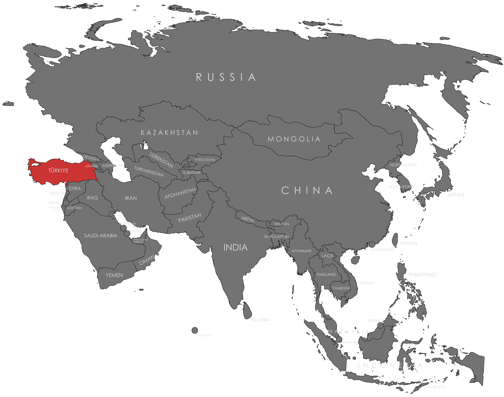

Specifications
- Local Name: Türkiye
- Proportion: 2:3
- Name of the Flag: Ay Yıldızlı Al Bayrak (Red Flag with Crescent and Star)
- Adopted: June 5, 1936
Symbolism
- Red: Blood of martyrs and bravery
- White: Peace and purity
- Crescent: Progress and Islamic heritage
- Five-pointed star: Independence and light
Colors:
Shapes / Symbols:
Meaning / Special Display
- Prominently displayed on national holidays, governmental ceremonies, and military events.
Description
- The flag represents the Republic of Turkey, its independence, and the historical legacy of the Turkish nation.
- For its citizens, it symbolizes courage, unity, and devotion to national values.

Return to Gallery